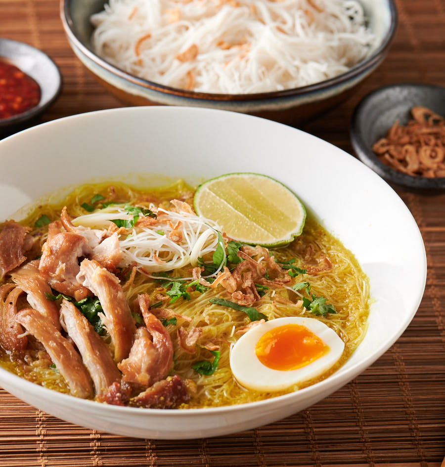
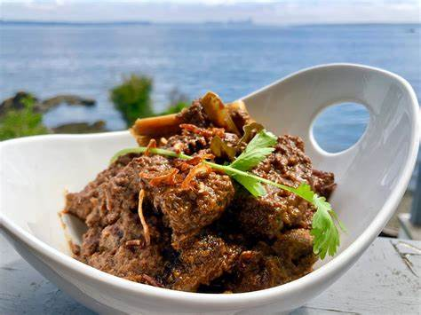
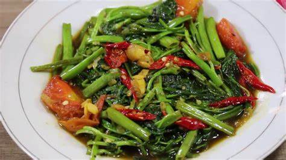

Masak Nanti

Ikan Bakar
Ikan bakar adalah hidangan Indonesia dan Malaysia, disiapkan dengan ikan bakar arang atau bentuk makanan laut lainnya. Ikan bakar secara harfiah berarti "ikan bakar" dalam bahasa Indonesia dan Melayu. Ikan bakar berbeda dari hidangan ikan bakar lainnya karena sering mengandung bumbu seperti bumbu, kecap manis, sambal, dan ditutup dengan daun pisang dan dimasak di atas api arang. Mulai Memasak.jpg)
Sayur Lodeh
Sayur lodeh adalah sup sayuran Indonesia yang dibuat dari sayuran dalam santan yang populer di Indonesia , tetapi paling sering dikaitkan dengan masakan Jawa . Mulai Memasak.jpg)
Sate Lilit
Sate lilit adalah varian sate di Indonesia yang berasal dari masakan Bali.Sate ini terbuat dari daging babi, ikan, ayam, sapi, atau bahkan kura-kura yang dicincang, kemudian dicampur dengan parutan kelapa, santan kental, air jeruk nipis, bawang merah, dan merica. Daging cincang yang sudah dibumbui dililitkan pada batang bambu, batang tebu atau serai, kemudian dibakar di atas arang. Beda dengan resep sate sate lainnya Mulai Memasak

Soto Ayam
Soto ayam adalah sejenis sup ayam pedas yang populer di Indonesia, Malaysia, dan Singapura. Resep untuk hidangannya bervariasi, tetapi selalu ada beberapa jenis mie dan kunyit yang cukup untuk membuat kuahnya berwarna kuning pekat. Khusus di Indonesia, soto ayam sering kali mengandung santan. Mulai Memasak.jpg)
Nasi Goreng seafood
Nasi goreng adalah hidangan nasi goreng Asia Tenggara, biasanya dimasak dengan potongan daging dan sayuran. Salah satu hidangan nasional Indonesia, juga endemik di komunitas berbahasa Melayu di negara-negara seperti Malaysia, Singapura dan Brunei, dan telah mendapatkan popularitas di Sri Lanka melalui migrasi dari Kepulauan Melayu, di negara-negara seperti Suriname melalui komunitas imigran Indonesia, dan di itu Mulai Memasak

Rendang
Rendang adalah masakan Minang yang berasal dari daerah Minangkabau di Sumatera Barat, Indonesia. masakan Ini telah menyebar di negara-negara tetangga di Asia Tenggara seperti Malaysia, Singapura, Brunei dan Filipina. Mulai Memasak
Opor Ayam
Opor ayam adalah masakan Indonesia dari Jawa Tengah yang terdiri dari ayam yang dimasak dengan santan. Campuran rempah-rempah (bumbu) termasuk lengkuas, serai, kayu manis, air asam jawa, gula aren, ketumbar, jintan, kemiri, bawang putih, bawang merah, dan merica. Opor ayam juga merupakan hidangan populer untuk lebaran atau Idul Fitri, biasanya dimakan dengan ketupat dan sambal goreng ati (hati sapi dalam sambal). Mulai Memasak
